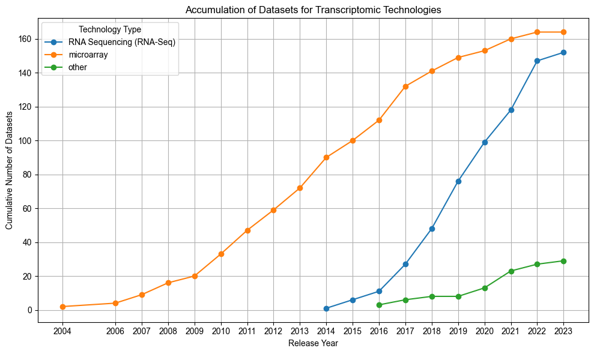
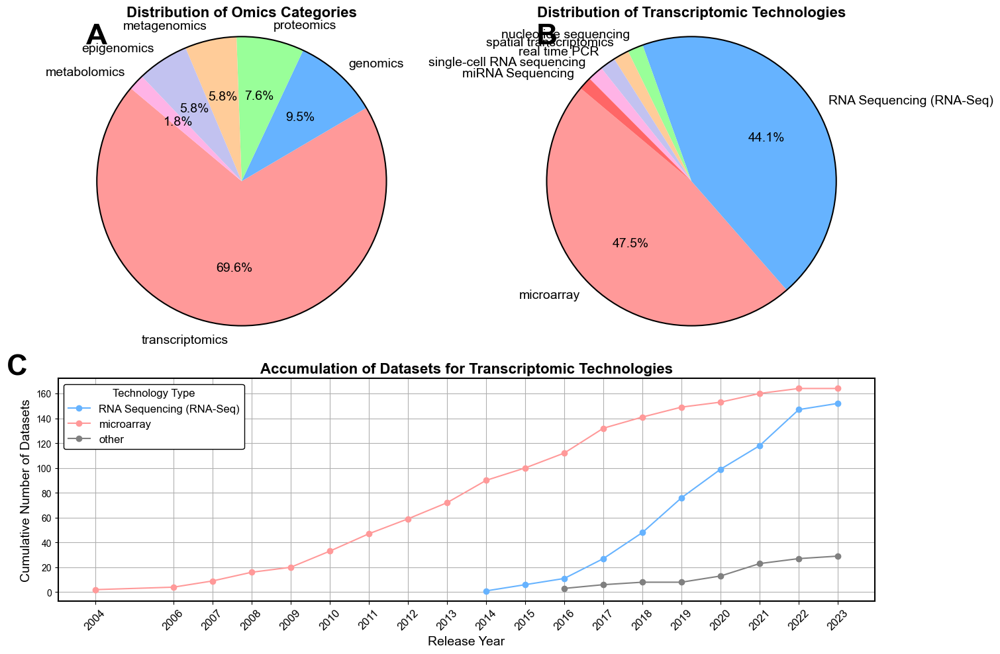

import pandas as pd
import matplotlib.pyplot as plt
import numpy as np
import matplotlib.gridspec as gridspec
import matplotlib.patches as patches
# Load the data
file_path = 'genelab_osd.txt'
data = pd.read_csv(file_path, delimiter='\t')
# Minor error/formatting corrections to data
data['technologyType'] = data['technologyType'].replace('single-cell RNA Sequencing', 'single-cell RNA sequencing')
data['technologyType'] = data['technologyType'].replace('DNA microarray', 'microarray')
# Helper function to sort measures into omics categories
def assign_category(measurement_type):
categories = {
'genomics': ["genome sequencing", "copy number variation profiling",
"deletion pool profiling", "Amplicon Sequencing",
"Genome-wide Association Study"],
'transcriptomics': ["transcription profiling", "RNA methylation profiling"],
'proteomics': ["protein expression profiling", "protein quantification",
"phosphoprotein profiling", "protein-DNA binding site identification",
"protein identification"],
'metabolomics': ["metabolite profiling"],
'epigenomics': ["DNA methylation profiling", "Chromatin Accessibility"],
'metagenomics': ["metagenome profiling",
"Metagenomic sequencing",
"environmental gene survey"],
'non-omics': ["Molecular Cellular Imaging", "Behavior", "Bone Microstructure",
"Echocardiogram", "Histological Assay", "Image Analysis",
"Morphometric analysis", "Bone biomechanical measurement",
"Calcium Uptake", "histology", "Intraocular Pressure", "Flow Cytometry"]
}
for category, measurements in categories.items():
if measurement_type in measurements:
return category
return "Uncategorized"
# Assign an omics type to each row based on measurementType
data['Category'] = data['measurementType'].apply(assign_category)
# category counts
print(data['Category'].value_counts())
---------------------------------------------------------------------------
FileNotFoundError Traceback (most recent call last)
Cell In[1], line 9
7 # Load the data
8 file_path = 'genelab_osd.txt'
----> 9 data = pd.read_csv(file_path, delimiter='\t')
11 # Minor error/formatting corrections to data
12 data['technologyType'] = data['technologyType'].replace('single-cell RNA Sequencing', 'single-cell RNA sequencing')
File /workspace/.pyenv_mirror/user/current/lib/python3.12/site-packages/pandas/io/parsers/readers.py:1026, in read_csv(filepath_or_buffer, sep, delimiter, header, names, index_col, usecols, dtype, engine, converters, true_values, false_values, skipinitialspace, skiprows, skipfooter, nrows, na_values, keep_default_na, na_filter, verbose, skip_blank_lines, parse_dates, infer_datetime_format, keep_date_col, date_parser, date_format, dayfirst, cache_dates, iterator, chunksize, compression, thousands, decimal, lineterminator, quotechar, quoting, doublequote, escapechar, comment, encoding, encoding_errors, dialect, on_bad_lines, delim_whitespace, low_memory, memory_map, float_precision, storage_options, dtype_backend)
1013 kwds_defaults = _refine_defaults_read(
1014 dialect,
1015 delimiter,
(...)
1022 dtype_backend=dtype_backend,
1023 )
1024 kwds.update(kwds_defaults)
-> 1026 return _read(filepath_or_buffer, kwds)
File /workspace/.pyenv_mirror/user/current/lib/python3.12/site-packages/pandas/io/parsers/readers.py:620, in _read(filepath_or_buffer, kwds)
617 _validate_names(kwds.get("names", None))
619 # Create the parser.
--> 620 parser = TextFileReader(filepath_or_buffer, **kwds)
622 if chunksize or iterator:
623 return parser
File /workspace/.pyenv_mirror/user/current/lib/python3.12/site-packages/pandas/io/parsers/readers.py:1620, in TextFileReader.__init__(self, f, engine, **kwds)
1617 self.options["has_index_names"] = kwds["has_index_names"]
1619 self.handles: IOHandles | None = None
-> 1620 self._engine = self._make_engine(f, self.engine)
File /workspace/.pyenv_mirror/user/current/lib/python3.12/site-packages/pandas/io/parsers/readers.py:1880, in TextFileReader._make_engine(self, f, engine)
1878 if "b" not in mode:
1879 mode += "b"
-> 1880 self.handles = get_handle(
1881 f,
1882 mode,
1883 encoding=self.options.get("encoding", None),
1884 compression=self.options.get("compression", None),
1885 memory_map=self.options.get("memory_map", False),
1886 is_text=is_text,
1887 errors=self.options.get("encoding_errors", "strict"),
1888 storage_options=self.options.get("storage_options", None),
1889 )
1890 assert self.handles is not None
1891 f = self.handles.handle
File /workspace/.pyenv_mirror/user/current/lib/python3.12/site-packages/pandas/io/common.py:873, in get_handle(path_or_buf, mode, encoding, compression, memory_map, is_text, errors, storage_options)
868 elif isinstance(handle, str):
869 # Check whether the filename is to be opened in binary mode.
870 # Binary mode does not support 'encoding' and 'newline'.
871 if ioargs.encoding and "b" not in ioargs.mode:
872 # Encoding
--> 873 handle = open(
874 handle,
875 ioargs.mode,
876 encoding=ioargs.encoding,
877 errors=errors,
878 newline="",
879 )
880 else:
881 # Binary mode
882 handle = open(handle, ioargs.mode)
FileNotFoundError: [Errno 2] No such file or directory: 'genelab_osd.txt'
# Drop non-omics rows
indices_to_drop = data[data['Category'] == 'non-omics'].index
omics_data = data.drop(indices_to_drop)
omics_category_counts = omics_data['Category'].value_counts()
# table of unique omics and their counts
print("Table of omics counts:")
print(omics_category_counts)
# plot pie chart
plt.figure(figsize=(10, 6))
plt.pie(omics_category_counts, labels=omics_category_counts.index, autopct='%1.1f%%', startangle=140)
plt.axis('equal')
plt.title('Distribution of Omics')
plt.show()
Table of omics counts:
Category
transcriptomics 350
genomics 48
proteomics 38
metagenomics 29
epigenomics 29
metabolomics 9
Name: count, dtype: int64
# helper function to only display percentages >= 3%
def custom_autopct(pct):
return ('%1.1f%%' % pct) if pct >= 3 else ''
# Filter data to 'transcription profiling' only
filtered_data = data[data['measurementType'] == 'transcription profiling']
# count occurrences of each unique transcriptomics technology
technology_counts = filtered_data['technologyType'].value_counts()
# Print a table of counts for transcriptomic techs
print("Table of unique values in the 'technologyType' column for 'transcription profiling' measurementType:")
print(technology_counts)
# plot pie chart
plt.figure(figsize=(10, 6))
plt.pie(technology_counts, labels=technology_counts.index, autopct=custom_autopct, startangle=140)
plt.axis('equal')
plt.title('Distribution of Transcriptomic Technologies')
plt.show()
Table of unique values in the 'technologyType' column for 'transcription profiling' measurementType:
technologyType
microarray 164
RNA Sequencing (RNA-Seq) 152
nucleotide sequencing 6
spatial transcriptomics 6
real time PCR 6
single-cell RNA sequencing 6
miRNA Sequencing 5
Name: count, dtype: int64
# Group non microarray and rna-seq technologies into 'other'
for index, row in filtered_data.iterrows():
if row['technologyType'] == 'microarray':
pass
elif row['technologyType'] == 'RNA Sequencing (RNA-Seq)':
pass
else:
filtered_data.at[index, 'technologyType'] = 'other'
# Group by publicReleaseDateYear and technologyType, then count the number of records in each group
grouped_data = filtered_data.groupby(['publicReleaseDateYear', 'technologyType']).size().unstack(fill_value=0)
# cumulative sum over the years and replace zeros with NaN
cumulative_data = grouped_data.cumsum().replace(0, np.nan)
# line graph of cumulative counts
cumulative_data.plot(kind='line', marker='o', figsize=(10, 6))
plt.title('Accumulation of Datasets for Transcriptomic Technologies')
plt.xlabel('Release Year')
plt.ylabel('Cumulative Number of Datasets')
plt.xticks(cumulative_data.index)
plt.legend(title='Technology Type')
plt.grid(True)
plt.tight_layout()
plt.show()

####### WHOLE FIGURE #####
# font
plt.rcParams['font.family'] = 'Arial'
textprops = {"fontsize": 14, "fontname": "Arial"}
fig = plt.figure(figsize=(15, 10))
gs = gridspec.GridSpec(2, 2, height_ratios=[1, 0.7])
colors = ['#ff9999','#66b3ff','#99ff99','#ffcc99','#c2c2f0','#ffb3e6', '#ff6666', '#c2f0c2']
def draw_circle(ax, position, radius, **kwargs):
circle = patches.Circle(position, radius, clip_on=False, edgecolor='black', facecolor='none', **kwargs)
ax.add_artist(circle)
# Panel A: Distribution of omics pie chart
ax0 = plt.subplot(gs[0, 0])
ax0.pie(omics_category_counts, labels=omics_category_counts.index, autopct='%1.1f%%', startangle=140, colors=colors, textprops=textprops)
ax0.axis('equal')
draw_circle(ax0, position=(0, 0), radius=1, linewidth=1.5)
ax0.set_title('Distribution of Omics Categories', fontsize=16, fontweight='bold')
ax0.text(-1, 1, 'A', horizontalalignment='center', verticalalignment='center', fontsize=32, fontweight='bold')
# Panel B: Distribution of transcriptomic tech pie chart
ax1 = plt.subplot(gs[0, 1])
ax1.pie(technology_counts, labels=technology_counts.index, autopct=custom_autopct, startangle=140, colors=colors, textprops=textprops)
ax1.axis('equal')
draw_circle(ax1, position=(0, 0), radius=1, linewidth=1.5)
ax1.set_title('Distribution of Transcriptomic Technologies', fontsize=16, fontweight='bold')
ax1.text(-1, 1, 'B', horizontalalignment='center', verticalalignment='center', fontsize=32, fontweight='bold')
# Panel C: Line chart transcriptomics tech
ax2 = plt.subplot(gs[1, :])
cumulative_data.plot(kind='line', marker='o', ax=ax2, color=['#66b3ff', '#ff9999','gray'])
ax2.set_title('Accumulation of Datasets for Transcriptomic Technologies', fontsize=16, fontweight='bold')
ax2.set_xlabel('Release Year', fontsize=14)
ax2.set_ylabel('Cumulative Number of Datasets', fontsize=14)
# thickness of axis
for spine in ax2.spines.values():
spine.set_linewidth(1.5)
# legend
legend = ax2.legend(title='Technology Type', fontsize=12, title_fontsize='large')
frame = legend.get_frame()
frame.set_edgecolor('black')
frame.set_facecolor('white')
frame.set_alpha(1)
ax2.grid(True)
# x-axis ticks
unique_years = cumulative_data.index.unique()
ax2.set_xticks(unique_years)
ax2.set_xticklabels(unique_years, rotation=45, fontsize=12)
ax2.text(-0.05, 1.05, 'C', transform=ax2.transAxes, horizontalalignment='center', verticalalignment='center', fontsize=32, fontweight='bold')
# Plot all and save .svg
plt.tight_layout()
plt.savefig("transcriptomic_trends.svg", format='svg')
plt.show()
